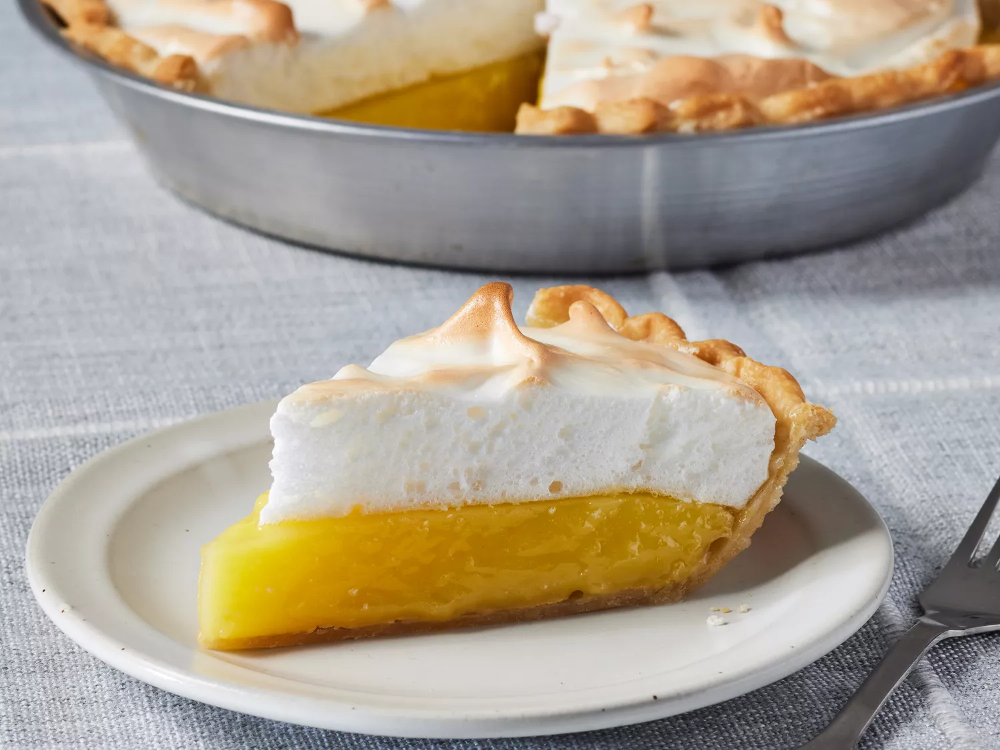

Lemon Meringue Pie Recipe

Ingredients
Filling
- 1 cup white sugar
- 2 tablespoons all-purpose flour
- 3 tablespoons cornstarch
- 1/4 teaspoon salt
- 1 1/2 cups water
- 2 lemons juiced and zested
- 2 tablespoons butter
- 4 egg yolks, beaten
- 1 9in pie crust
Meringue
- 4 egg whites
- 1/2 cup white sugar
Directions
- Gather all ingredients and preheat the oven to 325 degrees F (162 degrees C).
- To make the lemon filling: Whisk 1 cup sugar, flour, cornstarch, and salt together in a medium saucepan; stir in water, lemon juice, and lemon zest. Cook over medium-high heat, stirring frequently, until mixture comes to a boil. Stir in butter.
- Place egg yolks in a small bowl and gradually whisk in 1/2 cup of hot sugar mixture.
- Whisk egg yolk mixture back into remaining sugar mixture. Bring to a boil and continue to cook while stirring constantly until thick. Remove from heat; pour filling into baked pastry shell.
- To make the meringue topping: Beat egg whites in a glass, metal, or ceramic bowl with an electric mixer until foamy. Gradually add sugar, continuing to beat until stiff peaks form.
- Spread meringue over pie filling, sealing the edges at the crust.
- Bake in preheated oven until meringue is golden brown, about 20 to 25 minutes.
- Serve and enjoy!